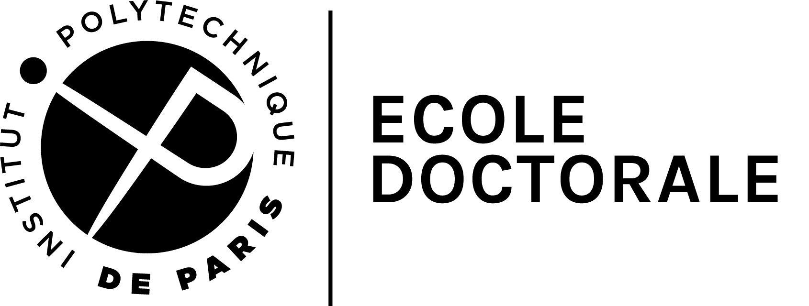

Discrete Exterior Calculus (DEC) has emerged as a key tool for the structure-preserving discretization of differential forms, proving vital in fields such as computational fluid dynamics, electromagnetism, and geometry processing. By maintaining the underlying geometric and topological properties of physical systems, DEC ensures numerical and physical fidelity. However, traditional DEC is restricted to scalar-valued forms. This limitation is significant, as many fundamental theories in physics and geometry, including general relativity, non-linear elasticity, and Yang-Mills gauge theo- ries, are naturally formulated using bundle-valued differential forms and their associated covariant operators. This thesis bridges that gap by extending the DEC framework to the bundle-valued setting. In the first part, we investigate the special case of connections on simplicial 2-manifolds, addressing the challenge of representing curvature and torsion consistently in a discrete environment. We introduce a modified discrete Levi-Civita connection and a corresponding discrete representation of the torsion 2-form, demonstrating their utility within a geometry processing pipeline. In the second part, we develop a general framework for discrete bundle-valued exterior calculus. A central contribution is the formalization of integration for bundle-valued forms by leveraging the interplay between connections and retractions. This theoretical foundation enables a rigor- ous discretization scheme that induces discrete bundle-valued forms directly from their smooth counterparts. Building on this integration theory, we introduce a novel discrete exterior covariant derivative. We demonstrate that this operator converges to its continuous counterpart under mesh refinement, overcoming limitations in prior research. Furthermore, we show that the Bianchi identities are satisfied in an exact combinatorial sense and hold true in the limit. In addition, we establish that core properties of the continuous theory, such as naturality and Whitney interpo- lation, are preserved within our framework. Finally, we demonstrate that the presented construc- tions are not limited to simplicial complexes, but extend to a broader class of non-simplicial cells.
@phdthesis{thesisTheoBraune,
Author = {Theo F. Braune},
School = {Institut Polytechnique de Paris},
Title = {Geometry Driven Discretization of Differential Operators},
Url = {https://theofbraune.github.io/blog/publications/projects/dissertation/thesis.pdf},
Year = {2026}}